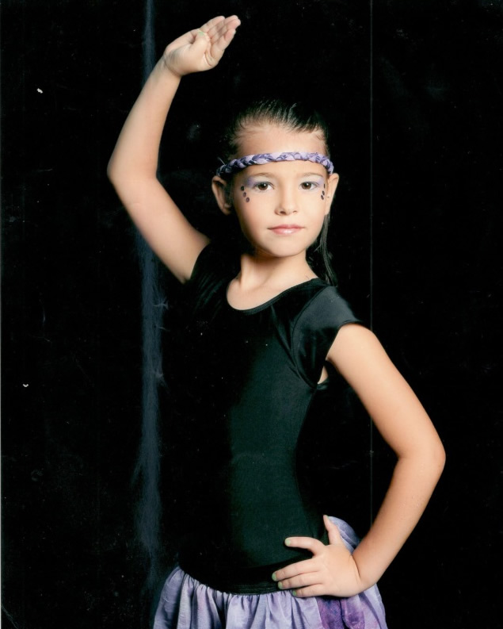
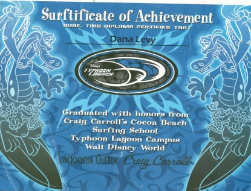
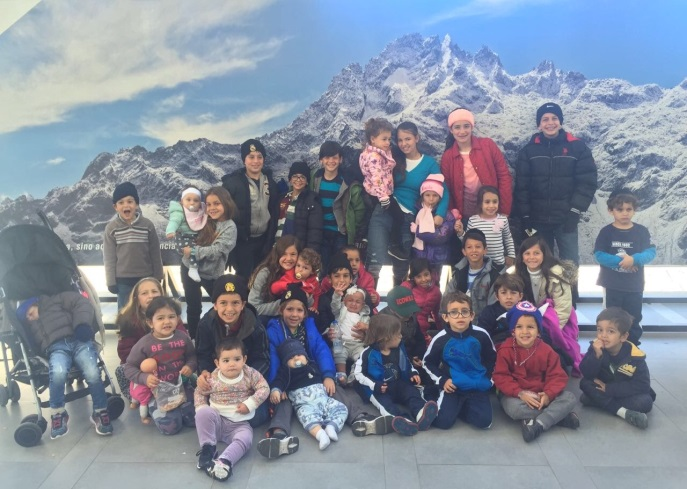

Línea del tiempo de Dana Levy
2003
MARTE 8 DE JULIO: 1:19 de la tarde nací yo.
JUEVES 19 DE JULIO: Me di mi primer baño en casa de mi abuela Elena.
18 DE JULIO: Di mi primer paseo a visitar el pediatra, el Dr. Jacky Hassan.
10 AGOSTO: sonreí por primera vez.
DICIEMBRE 2003: Primeras vacaciones en Puerto Azul donde aprendí a sentarme solita en la playa mansa.
2004
ENERO: Empecé a gatear.
FEBRERO: Mi mamá me inscribió en el Baby Gym “Sun Flower”, y mi mamá me contó que me fascinaba y además que hacía todas las actividades de manera muy veloz (mi mamá juraba que ya iba a ser súper dotada)
MAYO: En el Baby Gym se quedaron impresionados con mi belleza (obviamente palabras de mi mamá) y me hicieron una sesión de fotos y fui modelo de un folleto de venta de ropa de bebes a mis 10 mesecitos.
JUNIO: Me salió mi primer diente.
JULIO: Di mis primeros pasitos.
20 de SEPTIEMBRE: Entre al pre-maternal Tip-Tipot, con sólo 14 mesecitos.
28 DE DICIEMBRE: Mi primer corte de pelo.
2005
7 DE ENERO: Nacimiento de mi hermana Vivi, por lo que dejo de ser hija única a los escasos 18 meses de edad.
MARZO: llevé las flores en la boda de mis tíos Jimmy Miriam. ¡Estaba muy emociona
MAYO: Mi primer concierto en el Poliedro de Caracas. Fuimos mi mamá mi papá y yo a ver a Barney en concierto!!!
8 DE JULIO: Cumplo 2 añitos y mi mamá me lo celebró con una enorme piñata de Barney (mi personaje favorito) en casa de mi abuela Elena con toda mi familia.
DICIEMBRE: Mi mamá organizó una gran fiesta de Janucá para que yo vivenciara la alegría de la fiesta. Hicimos muchos dibujos y llenamos las paredes de la casa con mis dibujos.
2006
7 DE ENERO: Celebramos el cumpleaños de mi hermana Vivi, pero lo recuerdo como un día especial ya que mi mamá trajo una sorpresa especialmente para mí: Barney, BJ y Baby Bop vinieron. ¡Yo no podía con la emoción!!
MARZO: Mi primer viaje en avión y fue a la isla de Margarita. Pasamos el fin de semana en el hotel Lagunamar y aunque no me crean recuerdo ese viaje muy bien. Me encantó la guardería del lugar. Mi mamá también lo recuerda muy bien porque dijo que Vivi y yo nos portamos malísimo (típico).
8 DE JULIO: Fue mi cumpleaños número 3, lo recuerdo especialmente, porque yo quería hacer una piscinata y mi mamá compro varias piscinitas y las colocó en el jardín del edificio, pero nadie se metió ya que hacía mucho frio. Nos pintamos el pelo con spray que mi mamá compró para divertirnos, y mi piñata fue de Dora. Otra vez asistió toda mi familia.
28 DE OCTUBRE: Nacimiento de mi hermano Arie. Yo tenía 3 años y 3 meses y ya era hermana mayor de 2 hermanitos.
5 DE NOVIEMBRE: Obviamente se celebró el Brit de mi hermanito y yo salgo en primera fila como testigo en las fotos.
2007
ENERO: Nos mudamos del amado apartamento donde mi mamá creció y yo había crecido hasta ese momento a casa de mi abuela Elena.
PURIM: En Tip-Tipot se celebra un día especial con los padres y ese día de verdad que fue especial pues lo disfruté solita con mis padres (cosa que no hacía desde hace mucho ya que yo ya era hermana mayor y mis padres pasaban mucho tiempo ocupándose de mis hermanitos).
JULIO: Mi cuarto cumpleaños, primer cumple que celebro con mis amigos y obvio también con la familia.
SEPTIEMBRE: Comienzo Kinder Dubim (Osito), en Hebraica. Hago nuevos amigos, en especial recuerdo a Lily Schachtel y a Sidney Stambouli.
OCTUBRE: Nos mudamos a nuestro apartamento actual. Estaba muy emocionada porque el edificio tenía piscina.
2008
6 DE ENERO: “Día de reyes” mis padres nos llevan a un parque de agua en la ciudad de Valencia llamado DUNAS. ¡SUPER FINO!!! Totalmente recomendable. ¿Por qué recuerdo ese día? Porque se volvió una tradición que siempre vayamos en esa fecha.
JULIO: Celebro mi cumpleaños número “5” en el área de Juventud de Hebraica con mi amiga Sidney que cumple el mismo día que yo e invitamos a los 3 de kínder. Mi piñata era de Unicornio.
VERANO: Viajo por primera vez fuera de Venezuela y fue a la ciudad de Miami en los Estados Unidos. Este viaje fue importante ya que fuimos mis hermanos y yo para obtener la ciudadanía americana.
SEPTIEMBRE: Comienzo preparatorio “A” Tzavim (tortugas) con mi maestra Graciela, a quien especialmente recuerdo, porque me enseñó a leer y a escribir.
OCTUBRE: Como yo estaba obsesionada con los toboganes de agua, viajamos a Chichiriviche a un hotel finísimo (mi mamá dice que asqueroso), llamado Isla del Sol. En el que había muchas piscinas temáticas.
2009
MAYO: Voy con mi mamá y amigas al show de “Disney On Ice” en el poliedro de Caracas. ¿Por qué lo recuerdo de manera especial? Porque fui sola con mi mamá (sin hermanos) y además estuvo muy fino.
JULIO: Cumpleaños “6” esta vez lo celebro con mi amiga Sofía Abadí y nuestras madres organizaron una piscinata en la piscina de la residencia donde vivo. No sé por qué, pero recuerdo que el regalo de salida fueron unos salvavidas y a mí me pareció infantil.
AGOSTO: Aprendo a montar bicicleta sin las rueditas de atrás.
SEPTIEMBRE: Entro a cursar mi último año en el pre-escolar. Preparatorio “B” Otto (carro).
OCTUBRE: El departamento de deportes organizó una presentación de diferentes deportes y me cautivó uno en particular: KARATE. Mi mamá me inscribió y fue importante ya que los próximos 5 años los dediqué a este deporte.
2010
13 DE ABRIL: Tengo 6 años y 9 meses y me vuelvo hermana mayor de tres hermanitos. Esta vez nace mi hermanita Analy.
8 DE JULIO: Se me cae mi primer diente el día de mi cumpleaños número 7.
JULIO: Me gradúo de pre-escolar. Hubo un acto muy lindo en el que actué muchísimo (por eso lo recuerdo, pues yo hacia el papel de maestra). Recibí un diploma y una medalla.
SEPTIEMBRE Comienzo primer grado en el colegio Moral y Luces Herzl Bialik. Mi maestra se llamada Gaby (aunque yo la llamaba osito de peluche) y la recuerdo con mucho cariño.
OCTUBRE: Me inscriben en “Bailando con Luis Charama” una clase de baile moderno, Y ahí comienza mi pasión por el baile.

2011
ENERO: Me vuelvo a mudar a casa de mis abuelos maternos, está vez porque mis padres decidieron remodelar nuestro apartamento.
MARZO: Comienzo otra actividad que me encantó realizar: Yoga en Telas. Era muy demandante, tenía que ser muy elástica y poner muy dura la barriga (así me decía la profesora todo el tiempo) ¡fue muy chévere!
VERANO: Con 8 años recién cumplidos viajamos a Orlando. ¡Fue un sueño hecho realidad! Fue un viaje genial, pues vi a mis personajes favoritos.
VERANO: Aprendo a surfear, mi papá me lleva a una clase a las 6 de la mañana en uno de los parques de agua (ya que era mi sueño ser surfista) recuerdo que era la única niña pues todos eran adultos y por eso me consintieron mucho.

SEPTIEMBRE: Comienzo segundo grado, y me tocó con otra maestra muy especial que se llamaba Verónica.
2012
ENERO: Después de un año de remodelaciones, por fin volvemos a nuestro adorado apartamento.
CARNAVAL: Viajamos a La Gran Sabana. Un viaje muy especial organizado por Hebraica, en el que conocí gente nueva y unos lugares que jamás olvidaré por los impresionantes paisajes.
VERANO: Viajé por primera vez solita y estuve 3 semanas en un campamento en Nueva Jersey. La pasé genial y mis padres me fueron a buscar y pasamos unos días muy especiales en la ciudad de Nueva York, ellos y yo solita.
SEPTIEMBRE: Comienzo mi tercer grado en el colegio Cristóbal Colón Sinaí. Fue un cambio importante ya que mis padres querían que nos eduquemos en un ambiente más religioso.
DICIEMBRE: Como todos los años en esta fecha, pasamos nuestras vacaciones en el Club Puerto Azul y menciono esto porque descubrí otra pasión ese diciembre: Velas. Me inscribí en la clase de velas y aprendí a manejar un pequeño barquito de vela.
2013
CARNAVAL: Participé en la elección de las Mini Reinitas del Club Puerto Azul y me otorgaron la banda de Miss surfista. ¡Me encantó esa experiencia!
VACACIONES: Mi mamá nos inscribe a mis hermanos (Arie y Vivi) y a mí en un campamento de arte en “Los Galpones de Los Chorros” (Creo que se llamaba así). Y ¿Por qué lo cuento? Resulta que mis hermanos se portaron malísimo y tuvieron que llamar a mi mamá para que los saque del campamento y fui la única de mis hermanos en quedarse.
VACACIONES: Tuvimos que viajar a Estados Unidos para renovar nuestros pasaportes. (No sabes lo tristes que estábamos). En ese viaje recuerdo la visita al Safari, nunca había estado en uno.
8 DE JULIO: Celebro mi cumpleaños número diez en Miami y lo recuerdo especialmente pues mis padres me llevaron a Chucky Cheese (un lugar de maquinitas) y me metieron en una máquina en la que tenía que agarrar la mayor cantidad de tiquetes y así poder ganar un gran premio.
SEPTIEMBRE: Comienzo 4to grado, pero esta vez en el Colegio Moral y Luces Herzl Bialik, pues le pedí a mis padres que me cambiaran.
2014
8 DE JULIO: Celebro mi cumpleaños invitando a diez amigas a dormir en mi casa. Fue súper, porque mi mamá nos llevó al cine, luego nos dormimos tardísimo y en la mañana nos prepararon panquecas con Nutella.
VACACIONES: Participo en el campamento de Hebraica, pero esta vez como pre-madrijá. Yo no tenía la edad para estar en ese grupo, pero insistí tanto que me integraron con los niños mayores. Me sentí muy especial.
AGOSTO: Comienzo mi quinto grado, esta vez en el Colegio Campo Alegre. Fue un cambio de 180 grados, ya que no solo iba a estudiar en inglés sino, que me relacionaría con gente No judía.
SEPTIEMBRE: Se casa nuestra querida Deborah, mi prima mayor de parte materna. Fue todo un acontecimiento, pues ella es la primera, bisnieta, nieta y sobrina. Vino mi bisabuela Penina, mamá de mi abuelo Arie. Ese mes también celebramos el cumpleaños número “70” de mi abuelo materno y le hicimos una gran fiesta, aprovechando que mi bisabuela estaba en Caracas (ella vive en Israel). La boda estuvo espectacular, todos los primos (17 para ese momento) participamos en el cortejo. FUE MUY MUY ESPECIAL.
NOVIEMBRE: Participo en las competencias de CANVAS. Son competencias intercolegiales y yo competí con el equipo de Voleibol.
2015
MAYO: Me graduó de la escuela básica (Elementary school) y me otorgan el diploma por el reconocimiento destacado en escritura.
27 DE JUNIO: Celebro mi Bat Mitzva de una manera espectacular. Mis padres organizaron una fiesta en el Salón Jerusalén a la que asistieron todas mis amigas de Hebraica. Fue un evento lleno de contenido y emociones. Mis padres me prepararon un video que relata con imágenes mis primeros doce años de vida. ¡Fue realmente uno de los mejores días de mi vida!
JUNIO: Mi tía Carolina (esposa de mi tío Niso, hermano de mi papá) me regala mi primer celular, Llevaba años pidiéndoles uno a mis padres y nunca me lo dieron hasta que accedieron que me lo regale por mi Bat Mitzva.
JULIO: Voy al campamento Blue Star en Carolina del Norte. ¡Fue lo Máximo!
AGOSTO: Comienzo Middle School (La escuela media) en el colegio campo Alegre. Fue importante porque cambia el uniforme a chemise azul y esto me hacía sentir mayor.
2016
AÑO ESCOLAR: Este año en la escuela participé en la banda musical, tocando el clarinete. Toqué mi primer solo y también se realizó un musical en el que yo formaba parte del coro.
VACACIONES: participo como madrijá en el campamento Macabilandia.
27 DE JULIO: Nace mi cuarto hermanito Eli David. Este acontecimiento fue muy muy especial. Me pasé el resto de mis vacaciones ayudando a mi mamá en el cuidado de mi pequeño hermano.
SEPTIEMBRE: Comienzo primer año de bachillerato en el Liceo Moral y Luces Herzl Bialik. Me sentía muy emocionada por volver a estudiar con mi gente.
DICIEMBRE: Fui a un viaje espectacular a otro estado hermoso de Venezuela. Esta vez le tocó el turno a Mérida. Fue muy divertido ya que viajamos 10 familias, éramos muchos niños ¡y la pasamos muy bien!

2017
MAYO: Fallece mi abuelo paterno, mi abuelo Nico. El dolor más grande que hasta ese momento he sentido.
JULIO: Viajo de nuevo al campamento Blue Star, pero esta vez con mi hermana Vivi, por lo que fue una experiencia diferente.
SEPTIEMBRE: Comienzo segundo año de bachillerato, con la peculiaridad que tengo a mi mamá como Morá de Tanaj.
OCTUBRE: Participé en el modelo de Naciones Unidas (CAMUN) que organiza el Liceo Moral y Luces, personificando a la líder opositora Dinorah Figuera. Muy interesante la experiencia.
DICIEMBRE: Viajé por primera vez a Israel. Fue muy emocionante. Había esperado toda mi vida para conocer Tierra Santa.
2018
28 de MARZO: Fallece mi bisabuela “añuca” la mamá de mi abuela Elena. Yo había compartido mucho con ella ya que vivimos muchas veces en casa de mi abuela, mientras ella también lo estaba. Es muy raro is a casa de mi abuela y no verla ahí.
ABRIL: Al cumplirse el mes de fallecimiento de mi bisabuela, mi abuela y sus hermanas organizaron un shiur en su honor (para la elevación de su alma). Mi mamá era la exponente, sin embargo, yo quise participar leyendo un escrito que realicé tras el fallecimiento de ésta. Pero, para mi sorpresa y la de todos empecé a improvisar, hablando palabras de Torah y finalizando con unas palabras en honor a ella. Fui el centro de atención y halagos por varios días.
27 DE ABRIL: Las 10 familias que viajamos a Mérida en esta ocasión nos tomamos el fin de semana largo para conocer el estado de Yaracuy. Nos alojamos en una hacienda con vistas espectaculares, pero pésimo servicio. Sin embargo, valió la pena conocer y admirar las diferentes regiones hermosas que tiene este maravilloso país.
30 DE MAYO: Participé por primera vez en “Israel Mun” es un debate sobre temas relacionados a Israel y a nuestra identidad como judíos. Me encantó participar, especialmente porque me dieron el premio de “delegada fastidiosa”. Eso fue porque me esmeré en participar, sin embargo, la mesa pensó que me pasé un poquito en mis intervenciones.
15 DE JUNIO: Entrego finalmente el trabajo en el que he estado trabajando un año entero. En este trabajo deje mi alma, puse todo de mí y fue maravilloso haber recorrido las historias de mis antepasados.